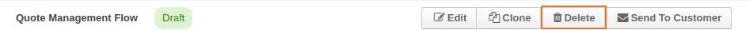
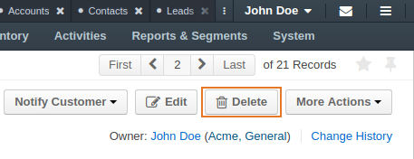

Important
This option is available only when:
In the main menu, navigate to Sales > Quotes. The quote list opens.
Select the check boxes in front of the quotes that you need to delete, click the More Options menu at the end of list header, and then click Delete.
Tip
To select bulk of items quickly, click next to the check box at the beginning of the table header and then select one of the following options:
To clear the selection, select None.
In the confirmation dialog, click Yes, Delete.
Important
You can delete a quote in this way only when the Quote Management Flow / Backoffice Quote Flow with Approvals are inactive. Otherwise, use the Delete transition defined within the active workflow:
Click Delete on the top right of the page.
In the confirmation dialog, click Yes, Delete.